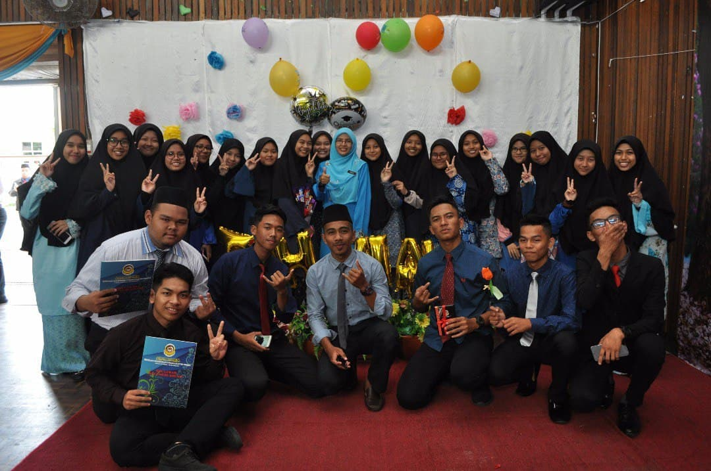

| NAME OF SCHOOL | YEAR | ABOUT |
|---|---|---|
| SEKOLAH RENDAH AGAMA BERSEPADU ZAINAL ABIDIN | 2008-2010 | This school could be found in Dungun, Terengganu. This was also the first religious school built in Dungun, and my class was among the first. The school was close to my house, and I rode my bike to school. I enjoy being at this school because the teachers and staff are caring and take excellent care of the students. |
| SEKOLAH RENDAH KEBANGSAAN BALAI BESAR | 2011-2012 | This school is also in Dungun, Terengganu. I transferred to this school because my sister was in her first year of school. As a result, this school was also not bad. I began participating in sports and seminars for my UPSR. As a result, I met many new friends from other schools. |

| NAME OF SCHOOL | YEAR | ABOUT |
|---|---|---|
| SEKOLAH MENENGAH AGAMA SULTAN ISMAIL DUNGUN | 2011-2018 | I studied here from the start until the end of high school. In my second and final year of high school, I was an accounting student. I was enjoying learning because the best teacher in this school had transferred. I've also worked as a volunteer, secretary, bureaucrat, and in other capacities. This experience has made me realise that my communication skills and confidence level have improved. I was not afraid to speak in front of a group of people during a talk session or a seminar. |
| NAME OF UNIVERSITY | YEAR | ABOUT |
|---|---|---|
| UiTM MACHANG | 2019-2022 | I am a student pursuing an undergrad diploma in Information Management. I enjoy being here because Kelantan is known as a foodie's paradise. I can get a variety of foods at a low cost. I'm also smitten with the environment. This campus is lush with greenery and can truly help me unwind. If the next generation is unsure about where to further their education, I would recommend this campus. |